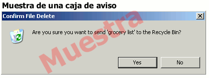

|

Las ventanas de aviso son mensajes pequeños que la computadora pone en la pantalla para alertarnos de alguna información importante o para preguntarnos algo antes de ejecutar el comando. A la derecha mostramos un ejemplo de una caja de aviso.
Cuando la ventana aparece, tienes que leer el mensaje o la pregunta y pulsar el botón apropiado para responder. Pulse el enlace debajo para que salga una ventana de aviso, entonces lea el mensaje y pulse el botón apropiado. Pulse para mostrar la caja de aviso |